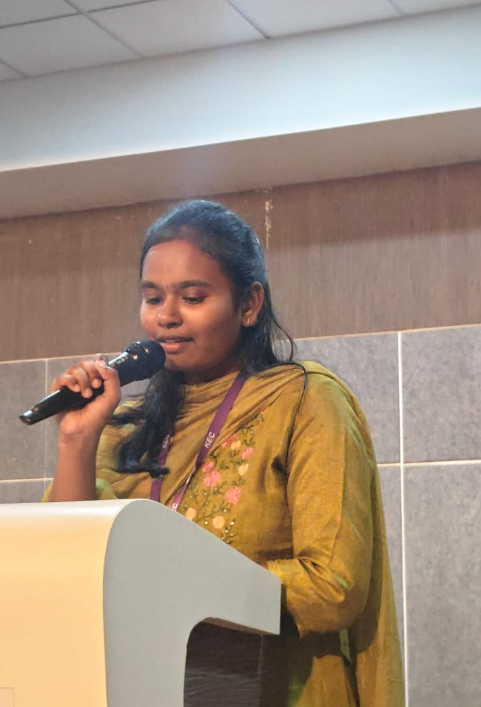

A passionate first-year Computer Science and Design student at Kongu Engineering College with a strong interest in UI/UX Design, Frontend Development, Innovation, Entrepreneurship, and Emerging Technologies.
Download ResumeCGPA
Executive Member
Events Coordinated

I am currently pursuing my Bachelor's degree in Computer Science and Design at Kongu Engineering College with a CGPA of 8.24.
As an Executive Member of the Institution's Innovation Council (IIC), I actively contribute to leadership initiatives, event management, hackathons, technical events, and innovation-focused programs.
My interests include UI/UX Design, Frontend Development, Artificial Intelligence, Entrepreneurship, and building impactful digital solutions that solve real-world problems.